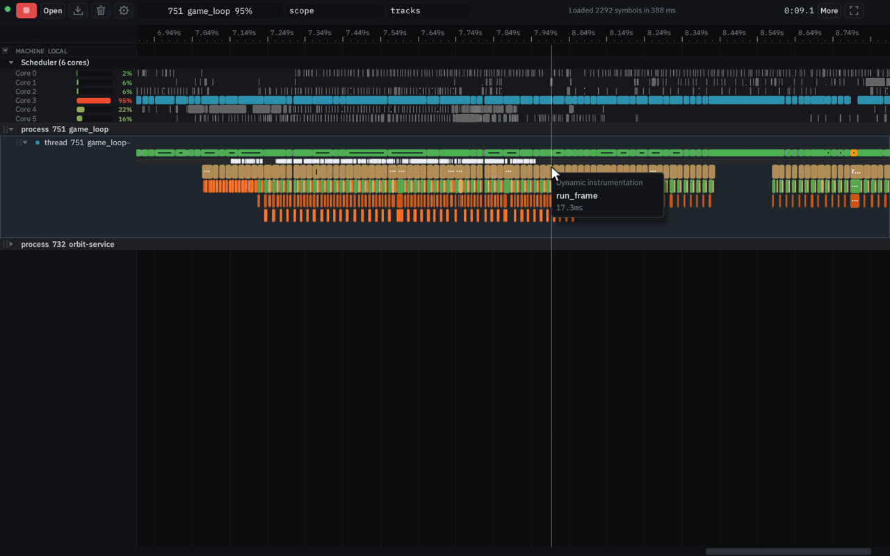
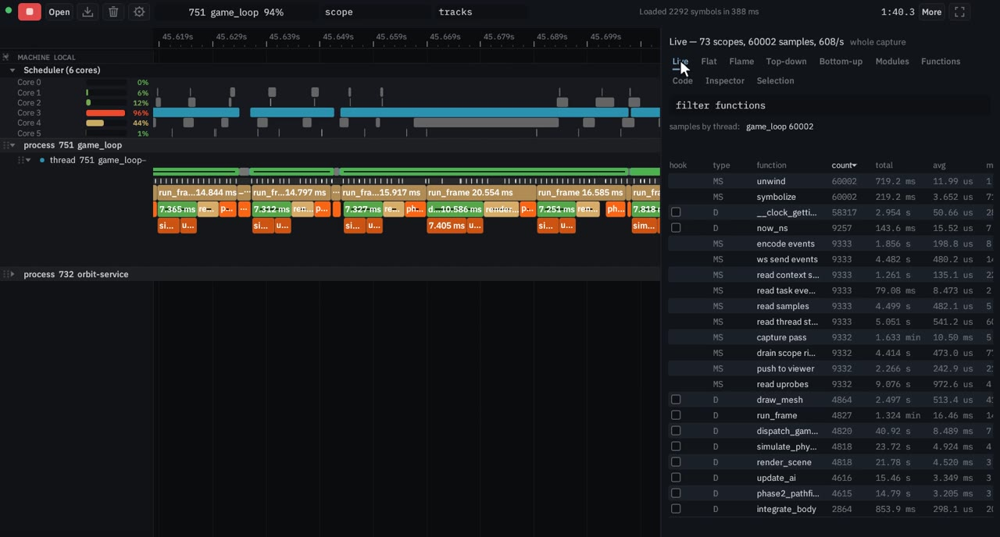
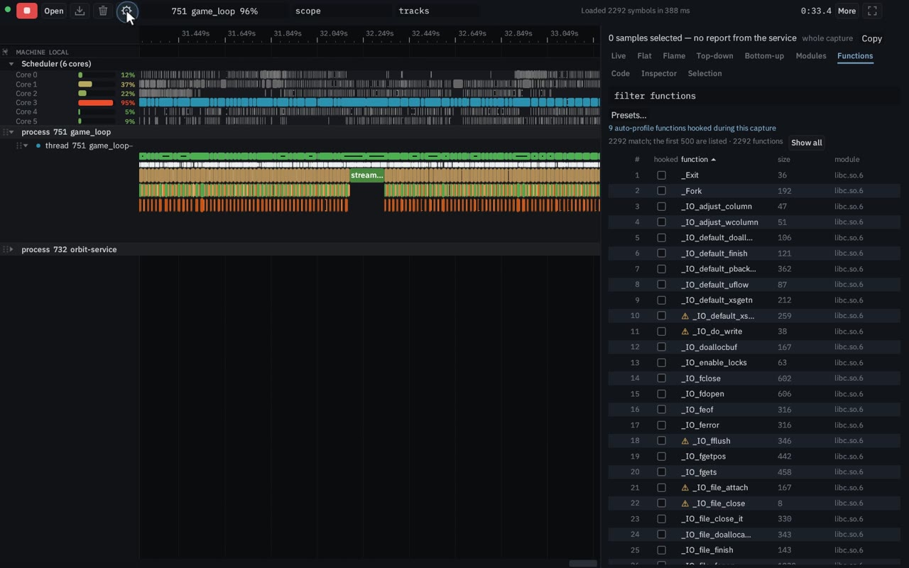
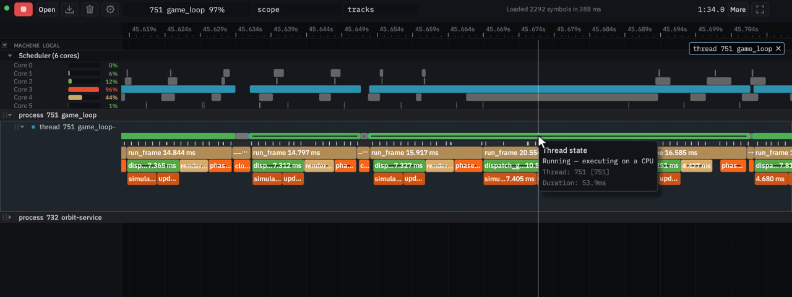

Hit Record, and the timeline starts
Pick the process and hit Record. Nothing to rebuild. The timeline streams live and the capture timer ticks. Function hooks need no code change; Frida is the default.
perfr attaches to a program that is already running, with no code change. The service runs on Linux, macOS and Windows. The viewer is a web page, so any browser on any device can open it.
A Rust re-implementation by the original author of Orbit.
Drag to pan · wheel over the ruler to zoom · click a thread · right-click a scope · Home to fit Open it on its own
{{facts}}
These recordings go from the shape of the run down to one core. The platform table says what the service records on each operating system. The features page has the rest.

Pick the process and hit Record. Nothing to rebuild. The timeline streams live and the capture timer ticks. Function hooks need no code change; Frida is the default.

The sampling flame graph is the whole run, at 1 kHz. Click a frame to highlight that function on the timeline. Double-click to zoom into its subtree.

Auto-profiling hooks the functions the samples point at and drops whatever costs too much, inside a budget you set. No rebuild and no source edits. On Linux it needs root or CAP_SYS_ADMIN. It is not available on macOS or Windows. You can also hook one function yourself.

The scheduler track is one lane per core. A slice is the time that thread was on that core; the thread-state strip shows Running and Sleeping. Select a stretch of the run and the report recomputes for that window, down to a single context switch.
Timeline zoom, scope search, call trees, live statistics, disassembly, traces and the rest of the recordings are on the features page.
The capture agent runs on the machine you profile. The viewer is a web page, so you can open it on another device.
Call stacks at 1 kHz, a lane per core, dynamic instrumentation with no code change, and manual scopes. The tested build is x86-64.
Call stacks at 1 kHz, a lane per core and thread states from the kernel logger (an elevated prompt), Frida function hooks and manual scopes without one. x86-64.
Manual scopes and Frida function hooks, on Intel and Apple silicon. Sampling, the scheduler, and auto-profiling are not in this build.
perfr
It attaches to a process that is already running and serves the viewer on the same port.
Web viewer
A Rust and WebAssembly page. Any device with a browser can open it, including one that is not the machine being profiled. A saved capture also opens with no service at all.
Target process
A native binary. perfr does not rebuild it and does not relaunch it.
perfr
On Linux: call stacks at 1 kHz, the scheduler, and dynamic instrumentation with no code change. Auto-profiling picks what to hook and keeps the cost under a budget. It needs root or CAP_SYS_ADMIN. On Windows: the same call stacks, scheduler and thread states from the kernel logger, which needs an elevated prompt; Frida hooks and manual scopes without one. On macOS: manual scopes and Frida function hooks. Sampling, the scheduler, and auto-profiling are not in that build.
Web viewer
Timeline, flame graph, call trees, live table, selection reports, and, on Linux and Windows, disassembly (next to source on Linux).
Status of perfr on main. The viewer itself runs in any browser.
| Feature | Linux | Windows | macOS |
|---|---|---|---|
| Call-stack sampling | Supported | Supported | Not yet |
| Scheduler and context switches | Supported | Supported | Not yet |
| Thread states | Supported | Supported | Not yet |
| Dynamic instrumentation (no code change) | Supported | Supported | Supported |
| Auto-profiling | Supported | Not yet | Not yet |
| Manual instrumentation | Supported | Supported | Supported |
| Symbols | Supported | Supported | Partial |
| Disassembly and source | Supported | Partial | Not yet |
| Service CPU and memory | Supported | Supported | Supported |
CAP_SYS_ADMIN.CAP_SYS_ADMIN. It is not available on macOS or Windows.The script installs the build for this machine, including the Frida files function hooks need.
# install (Linux x86-64 or macOS)
curl -fsSL https://raw.githubusercontent.com/perfr/perfr/main/tools/install/install.sh | sh
# install (Windows x64, PowerShell)
irm https://raw.githubusercontent.com/perfr/perfr/main/tools/install/install.ps1 | iex
perfr
# http://127.0.0.1:44766/The scripts download a GitHub Release tagged perfr-v*. Linux x86-64, macOS (one universal binary, Intel and Apple silicon) and Windows x86-64 are all in that release. Until a stable release exists the script stops and says so. Function hooks ship beside the binary and do not need root. On macOS, attaching needs a task port.
On Linux, sampling works at perf_event_paranoid 2 or below, and the scheduler needs 0 or below. Root, CAP_PERFMON or CAP_SYS_ADMIN bypass the sysctl. Auto-profiling needs root or CAP_SYS_ADMIN. On Windows, sampling, the scheduler and thread states need a prompt opened with Run as administrator. Those are not in the macOS build.
The service runs on the machine you profile. The viewer runs in any browser, on any device, including a phone.
Several machines go on one timeline: start the service on each with --join <hub>:44766 and the hub's viewer shows them all, clocks aligned over the link, one Record for every machine. Several machines in the manual.
One small API for Rust, C, C++ and Python is in the manual, alongside the HTTP API. The platform table is the feature-by-feature status.
Instrumentation and the HTTP APIA Rust re-implementation of Orbit, by the original author. The capture agent and the web viewer are the work in this repository.
Site built {{date}} at commit {{commit}}. Recordings are of the live viewer at da8aa05c, profiling game_loop. The embedded capture is a .perfr.stream.